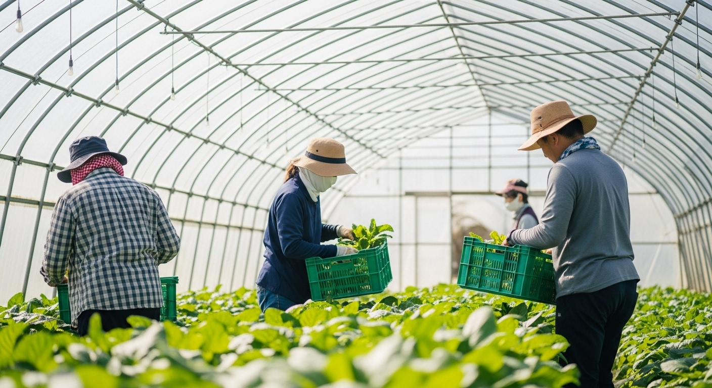
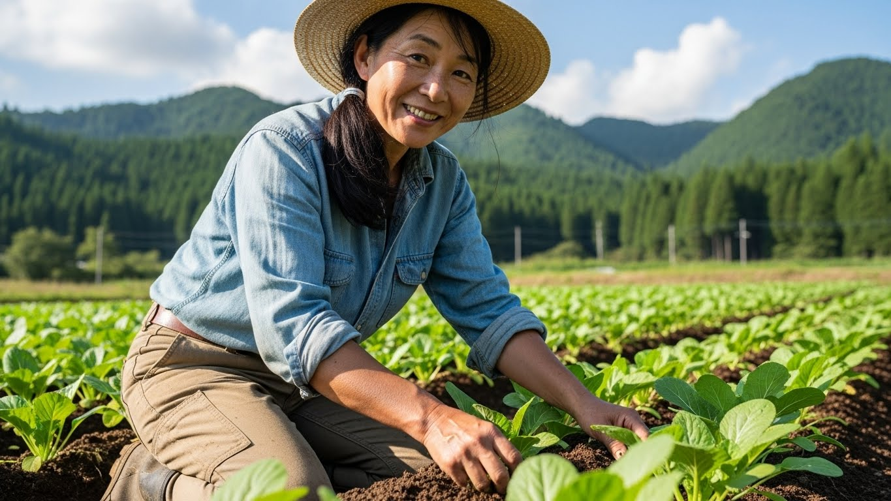
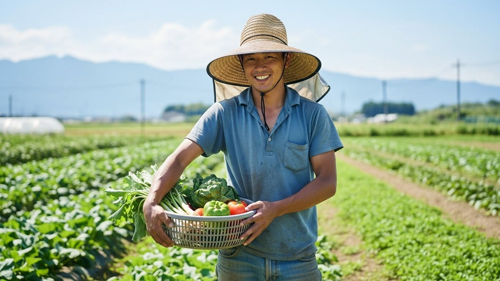
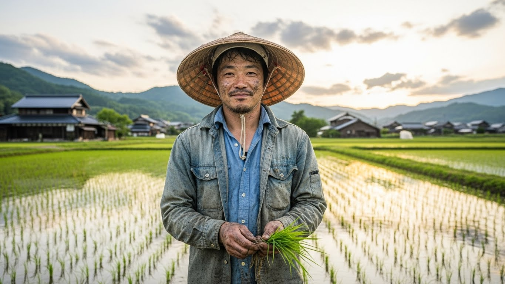

1. 現場密着の実践カリキュラム
ピーマン・トマト・ねぎ・カボチャなど、実際に販売する作物を栽培しながら 現場で必要な技術と感覚を身につけます。
岩手・九戸村で学ぶ、実践型農業研修
ナインズファームの研修は、教室ではなく畑が教科書。
実際の営農現場に入り、作付け計画から販売まで
独立就農に必要な流れを、2年間かけて身につけていきます。
2026年5月頃
未経験OK。畑で学ぶ1日体験。まずは雰囲気を見に来てください。
研修後に一人で営農できるよう、「栽培」「経営」「暮らし」の3つを バランスよく学べるカリキュラムを用意しています。
ピーマン・トマト・ねぎ・カボチャなど、実際に販売する作物を栽培しながら 現場で必要な技術と感覚を身につけます。
収支管理や資金計画、補助金の活用など、研修後に 自分の農園を立ち上げるための経営面も伴走します。
住まいの相談や地域とのつながりづくりなど、 「移住＋就農」を無理なく進めるためのサポート体制があります。
ゴールは「自分らしい営農スタイルで、長く続けられる農業」。 研修後の具体的なイメージを、いっしょに描いていきます。
※進路は面談を重ねながら、一人ひとりの希望や状況に合わせて一緒に考えていきます。

農業を始めるうえで不安になるのは、
「価格が下がったらどうしよう」「収入は安定するのか」という点です。
九戸村では、新規就農者が安心して農業に挑戦できるよう、
村独自の制度と支援事業が整えられています。
価格変動リスクから農家を守る、九戸村独自の制度
天候や市場環境によって変動する野菜価格。 九戸村では、対象野菜の価格が一定水準を下回った場合、 その差額の一部を補償する制度を設けています。
天候や市場環境の影響で、野菜価格は上下します。
価格下落が続くと、収入や経営計画に不安が生じます。
一定水準を下回った場合、差額の一部を補償する仕組みです。
収入の見通しが立ち、長く農業を続けやすくなります。
就農前から定着まで、段階的に伴走する支援
農業を助ける豊富な支援。
九戸村では、就農前の準備段階から、営農開始、経営が安定するまで、
段階ごとに伴走する農業支援事業を用意しています。
研修・情報提供・制度案内など、就農前から相談できる環境があります。
設備・資材導入や、営農開始時の実務面を支援します。
経営・収支の相談やフォローを通じて、継続できる農業を支えます。
地域とのつながりを持ちながら、安心して農業を続けていきます。
季節に合わせて作業内容が大きく変わるのも農業の特徴です。 ここでは、1日の流れと年間のざっくりしたイメージをご紹介します。
※季節・天候・作物によって時間帯や内容は変動します。
※別途、月に数回の座学（経営・記帳・補助金の仕組みなど）も実施します。
詳細なスケジュールは、見学やオンライン相談の際にくわしくご説明します。
実際にナインズファームで研修を受けた方・現在研修中の方の声をご紹介します。

Aさん
最初は農業未経験で不安も大きかったのですが、 毎日の作業と振り返りを通じて、少しずつ「自分の畑のイメージ」が具体的になっていきました。

Bさん
ただ技術を教わるだけでなく、どれくらい売上が必要で、 どんな投資が必要かを、リアルな数字で相談できるのがありがたいです。

Cさん
研修を通じて地域の農家さんや役場の方とも顔見知りになり、 小さな仕事の相談や情報をいただけるようになりました。
ナインズファーム代表／指導員
ナインズファームの研修に興味を持ってくださりありがとうございます。
私たちが目指しているのは、「農業の技術だけでなく、ここでの暮らしごと好きになってもらうこと」です。
作業の背景や理由を理解しながら進めることで、“考える農業”が自然に身につきます。 九戸村での暮らしや独立のこと、不安なことがあれば何でも相談してください。
畑の真ん中で共に悩み、一緒に笑い合える仲間をお待ちしています。
研修のゴールは「研修修了」ではなく、その先の「自分の営農」。 その一歩を安心して踏み出せるよう、制度・実務の両面からサポートします。
農業次世代人材投資資金などの制度活用を含め、 必要な資金と返済計画を一緒に整理していきます。
トラクターやハウス、ドローンなど、 初期投資を抑えつつスタートするための選択肢を検討します。
近隣農家さん・役場・JAなど、就農後に支えになってくれる 人とのつながりづくりも意識して動いていきます。
研修は「仕事」だけでなく「暮らし」もセット。 四季のはっきりした九戸村での生活についてもお伝えしています。
夏は涼しく、冬は雪も降る九戸村。 作物と同じように、自分の暮らしのリズムも四季に合わせて整っていきます。
空き家バンクや賃貸物件など、住まいの相談も可能です。 スーパー・病院・学校など、暮らしに必要な施設も一緒に確認していきます。
A. はい、未経験の方を前提にしたカリキュラムです。 体力面や作業の不安も、最初の面談で丁寧にお聞きします。
A. おおよその目安はありますが、 実際には面談で「健康状態」「今後の計画」などを総合的に見て判断します。
A. 条件に応じて研修手当や制度活用の可能性があります。 詳細は個別にご相談ください。
A. はい、随時受け付けています。 まずは下記フォームからお問い合わせください。
ナインズファームは、岩手県九戸村を拠点とする農業法人です。 研修事業のほか、野菜の生産・販売、地域の農業支援にも取り組んでいます。
「九戸で農業をしたい」「地方で暮らしながら働きたい」 そんな想いを持つ方と、一緒に畑に立てる日を楽しみにしています。
いきなり「就農する」と決めなくて大丈夫です。
見学・オンライン相談などを通じて、
あなたに合った働き方・暮らし方を一緒に考えていきましょう。
研修内容や九戸村での暮らしについてなど、気になる点はお気軽にご相談ください。 オンラインでの事前相談も可能です。